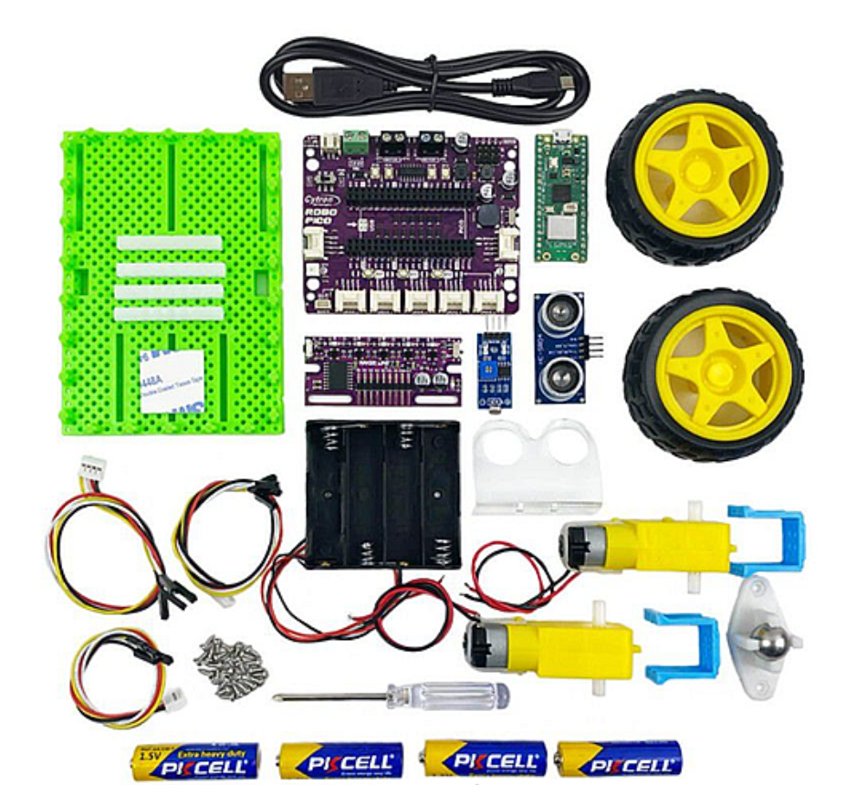
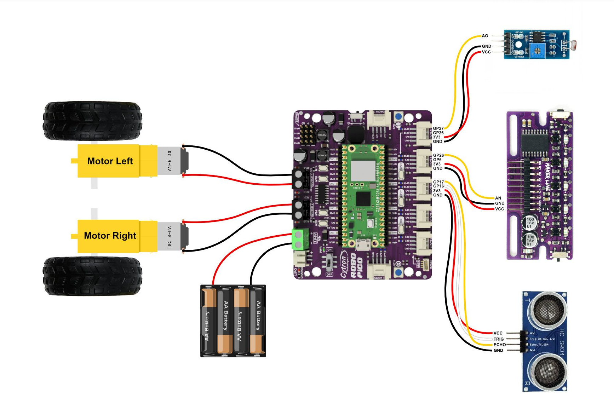
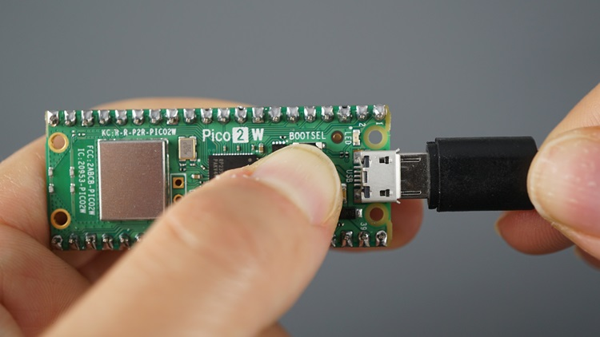

Guía del Robot
Aquí tienes todos los recursos necesarios para conocer, montar y programar tu robot paso a paso.
Descripción del BocoBot
El kit oficial que se utilizará en la competición es el BocoBot, un kit de robótica basado en Raspberry Pi Pico que cada equipo participante deberá montar por su cuenta, ensamblando el chasis, motores y sensores incluidos en la caja. Tanto el kit como la Raspberry serán entregados con tiempo de antelación para su montaje y pruebas.

A nivel de componentes, el kit incluye exactamente lo que necesitáis para afrontar las distintas pruebas del torneo. Para el desplazamiento, cuenta con dos motores independientes con sus respectivas ruedas y una rueda loca de acero en la parte inferior, lo que le permite girar sobre sí mismo. Cuenta también con un sensor siguelíneas y un sensor de ultrasonidos para medir distancias y evitar obstáculos.
Para rematar, la placa base tiene 2 LEDs RGB (NeoPixel), 2 botones programables y un zumbador piezoeléctrico (buzzer) con el que podréis generar melodías y tonos. Todo el sistema funciona con un portapilas estándar para cuatro pilas AA (también incluidas) e incluye el cable USB necesario para conectarlo al ordenador y cargar vuestro código.

Montaje del Robot
Video tutorial
Sigue paso a paso este vídeo en YouTube para ensamblar correctamente tu BocoBot:
Conexión de cables
A continuación puedes ver dónde conectar cada cable. Os recomendamos probar los componentes uno a uno primero, para ver que funcionan todos.

Programación del Robot
Instalación de CircuitPython
Antes de poder programar tu BocoBot, necesitas instalar CircuitPython en la Raspberry Pi Pico:
-
Descarga CircuitPython:
- Ve a circuitpython.org
- Descarga la última versión estable para Raspberry Pi Pico (archivo
.uf2)
-
Instala CircuitPython en la Pico:
- Desconecta la Raspberry Pi Pico de cualquier cable USB
- Mantén pulsado el botón BOOTSEL en la Pico
- Mientras mantienes el botón pulsado, conecta la Pico al ordenador con el cable USB
- Suelta el botón BOOTSEL
- La Pico aparecerá como una unidad de almacenamiento llamada RPI-RP2
- Arrastra y suelta el archivo
.uf2descargado en la unidad RPI-RP2 - La Pico se reiniciará automáticamente y aparecerá como CIRCUITPY

-
Verifica la instalación:
- Si ves la unidad CIRCUITPY, CircuitPython está correctamente instalado
- Ahora puedes copiar archivos Python directamente a esta unidad
Cargar tu código
Para programar el robot:
- Abre tu editor de código favorito (Thonny, Mu Editor, VS Code, etc.)
- Crea o edita el archivo
code.pyen la unidad CIRCUITPY - Guarda los cambios - el código se ejecutará automáticamente al guardar
- Para detener la ejecución, presiona
Ctrl+Cen el terminal serial
Consejo
El archivo principal debe llamarse code.py para que CircuitPython lo ejecute automáticamente al iniciar.
Consejo de desarrollo: no programéis directamente en la Pico
Importante
No desarrolléis directamente sobre la unidad CIRCUITPY. Editar archivos directamente en la Pico puede causar problemas de corrupción de archivos, bajo rendimiento y falta de espacio. Además, no podréis usar control de versiones (Git).
Lo recomendable es trabajar en una carpeta local de vuestro ordenador y sincronizar los archivos a la Pico cuando queráis probar. Podéis hacer esto con un script simple de bash:
#!/bin/bash
# deploy.sh — Sincroniza tu proyecto local con la Pico
# Ajusta la ruta de destino según tu sistema
rsync -av --delete --exclude='.git' ./ /media/$USER/CIRCUITPY/
Guardadlo como deploy.sh, dadle permisos de ejecución (chmod +x deploy.sh) y ejecutadlo cada vez que queráis actualizar el código en la Pico.
Consola serial para depuración
Podéis abrir una terminal serial para ver los print() de vuestro código y depurar errores. En Linux: picocom /dev/ttyACM0 (ajustad la ruta si es necesario). Para salir: Ctrl+A seguido de q.
Ejemplos de código
En el repositorio oficial de GitHub encontrarás ejemplos para:
- Control básico de motores
- Lectura del sensor de ultrasonidos
- Uso del sensor siguelíneas
- ¡Y más!
¡Tu primer programa! (Hello World)
Una vez instalado CircuitPython, prueba este código para verificar que todo funciona. Copia esto en code.py. Para usar la librería de neopixel, probablemente te la tengas que bajar (descargar y copiar al directorio lib de la unidad CIRCUITPY) de algún sitio como el bundle de librerías de CircuitPython, o usando pip.
import board
import time
import neopixel
# Configura los 2 LEDs RGB neopixel del robot
pixels = neopixel.NeoPixel(board.GP18, 2)
# Alterna entre rojo, verde y azul
colores = [(255, 0, 0), (0, 255, 0), (0, 0, 255)]
while True:
for color in colores:
pixels.fill(color)
time.sleep(0.5)
Si los LEDs del robot cambian de color, ¡todo está listo! 
¿No funciona?
Asegúrate de que el archivo se llama exactamente code.py y está en la raíz de la unidad CIRCUITPY. Si los LEDs no reaccionan, comprueba que el pin es correcto consultando el pinout de la Robo Pico.
Recursos adicionales
- Documentación oficial de CircuitPython
- Guía de CircuitPython para principiantes
- Ejemplos de uso, muchas cosas se os simplificarán si empezáis por aquí: Ejemplos de uso
- Pinout y documentación de la Robo Pico y Pinout de la Robo Pico
- Instalación de librerías: Instalación de librerías